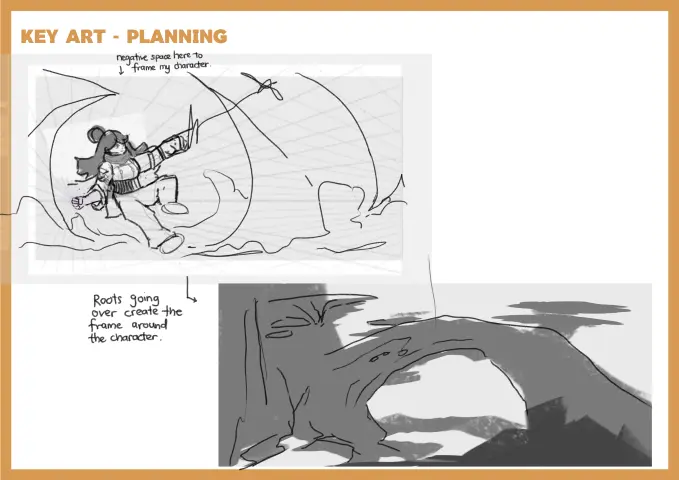
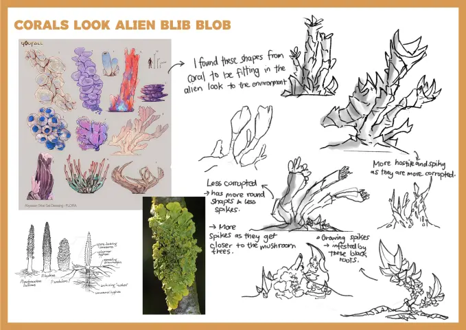
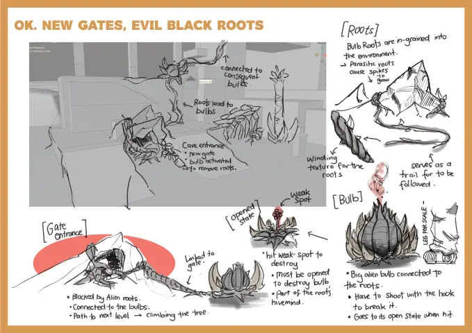
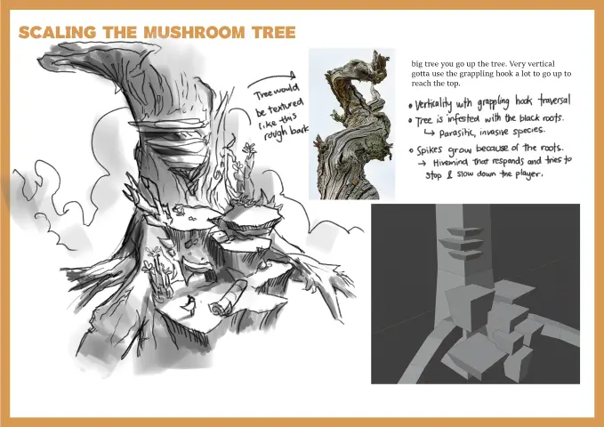
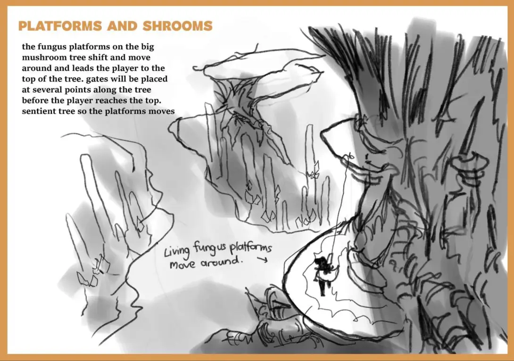

My Concept Art project for an RMIT University elective - the project centers around exploring world-building for a hypothetical game. The concept revolves around the protagonist who has been stranded on an alien planet.
The world draws inspiration from retro-futurism and science fiction elements - with the character drawing reference from '60s and '70s astronaut and cosmonaut suits. Meanwhile the environment is an unforgiving overrun alien planet that is dominated by fungal lifeforms. The environment has been infested with an unknown foreign black root that corrupts the local flora to be hostile to the protagonist. The goal for the player is to escape and find resources to power their vehicle - an upgraded Vespa scooter.
Photoshop
CONCEPT ART
DIGITAL ILLUSTRATION

The world is dominated by huge fungus life that inhabits the surface - massive branching mushroom trees encapsulate the top-side of the world. Here, different types of flora has taken dominance over the world and this is reflected through inspiration being taken from coral and prototaxites for the flora on the surface.








Our protagonist - an unlucky space traveller has found themselves stuck in this unforgiving world. She is equipped with her spacesuit with a power glove. This allows her to use its functions to grapple and fire projectiles.

The protagonist is inspired with a mix of old western and retro spacesuits. Their gear takes inspiration from retro sci-fi and some '80s tech similarly to Guardians of the Galaxy. The player would use the spacesuit's grappling hook on the glove to knock out alien bulbs and traverse the map with them.


ARTSTATION
ITCH.IO
SKETCHFAB